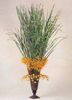

++イエロー デンドロビウムの ++アレンジ 器の延長戦にカタノハススキを配し、根元にバンダと竹串で中性子のように作られたネットが斬新に組み立てられた見事なミニマリズムのアレンジ。 [花材] タカノハススキ バンダ
************************** 東京フラワーデザインセンター メール：flobiku@aol.com TEL：03-3822-1313 東京都台東区上野桜木1-5-6-B1 **************************